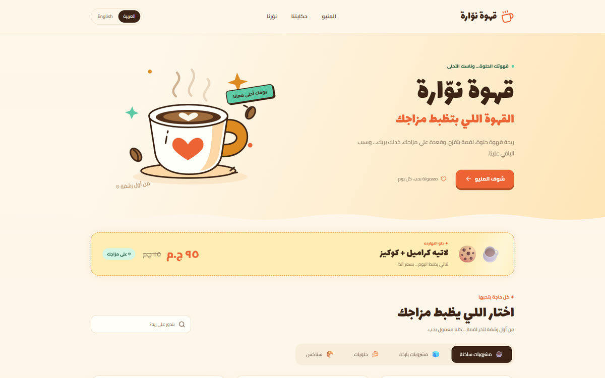
Nawara Café
A café menu with prices, live search, opening hours and a feedback form.
Ahmed Metered, product builder in Milan. I take each product from the first spec to a live site. SpecWatch and Roam Alone are live today. Posto, the job-search app I run my own search on, and Coldbrew, my outreach app, are open source.
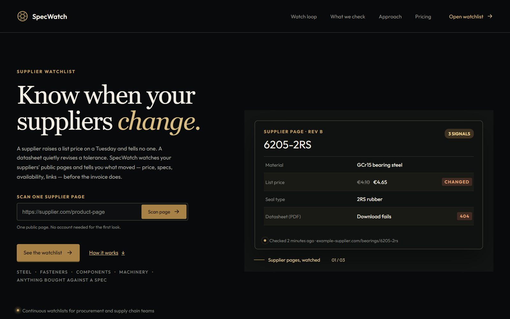
live · specwatch.meFor procurement teams who learn about a supplier's price rise from the invoice.
SpecWatch watches supplier product pages and reports what changed: prices, specs, dead datasheet links. I scoped it around procurement, set four self-serve tiers, and built it end to end, including alerts, PDF reports and Stripe billing.
Node.js (zero-dependency API) · node:sqlite · Playwright · Vite · Stripe · SendGrid · Caddy + pm2 on Azure
For academies that lose enrolments between the first message and the first payment.
Cohorta keeps every lead, follow-up, enrolment and instalment in one place, in English and Italian, and now covers the team side too: approvals, payroll and performance reviews. I wrote the spec, defined the managed-service offer, and built it with 814 unit tests and 36 end-to-end tests.
Next.js 15 · React 19 · PostgreSQL 16 · Drizzle · Docker Compose · Caddy
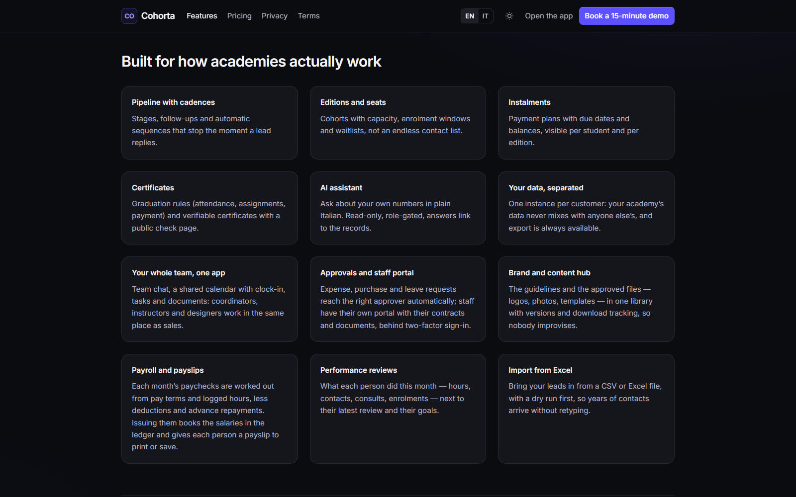
For people who sell to local businesses and want every message to be a good one.
Coldbrew finds and ranks the businesses in a city, then holds every draft for your approval: a linter checks that each message is short, specific and honest. It reads the replies, charts what works, and never sends anything itself. It also helps draft the messages. I designed it, built it and tested it end to end.
Node.js (no runtime dependencies) · node:sqlite · OpenStreetMap · Google Maps scraper in Docker · IMAP and Instagram (read-only) · 33 automated tests
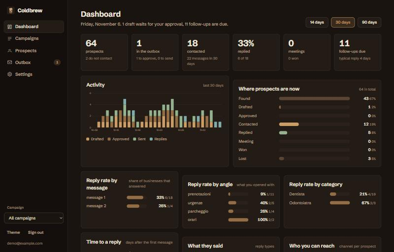
For job seekers whose situation rules out most postings.
Posto checks every posting against your real situation (work-permit hours, relocation, remote eligibility, languages) and says why each job is in or out. It also tracks your applications, reads your inbox for replies, compares your CVs with each posting, builds a one-page CV, and helps tailor your CVs. I designed, built and tested it end to end, and I run my own search on it.
Node.js (no runtime dependencies) · node:sqlite · 12 job sources · IMAP · Chrome extension · headless-browser PDF · 46 automated tests
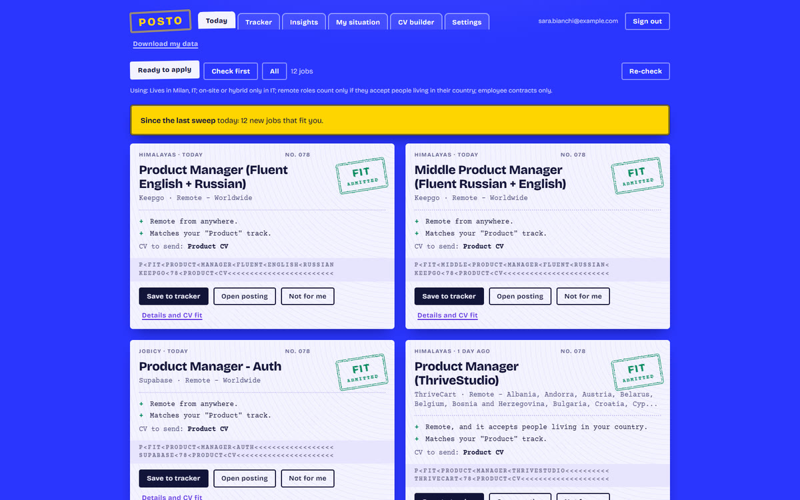
For students preparing Italian oral exams.
Built at the Learning Reimagined Hackathon (Albert School Milano, October 2026) from my product spec: it asks questions out loud, listens to your answer and grades on the 0-30 scale. Fail an exam and the study map moves the calendar forward.
React · Web Speech API (STT + TTS) · Lovable
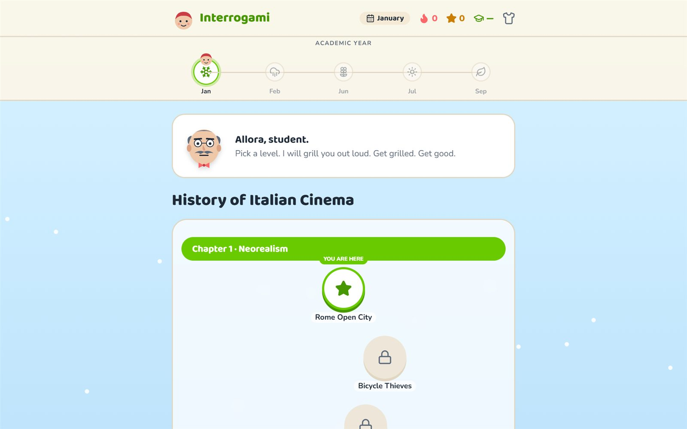
For independent travellers who want an Egypt plan written by someone local.
They fill in a request form and pay through Stripe, then receive a day-by-day multi-city itinerary and can ask for revisions. I run the whole loop myself: the site, the checkout and the itinerary content.
Next.js · Stripe · Resend
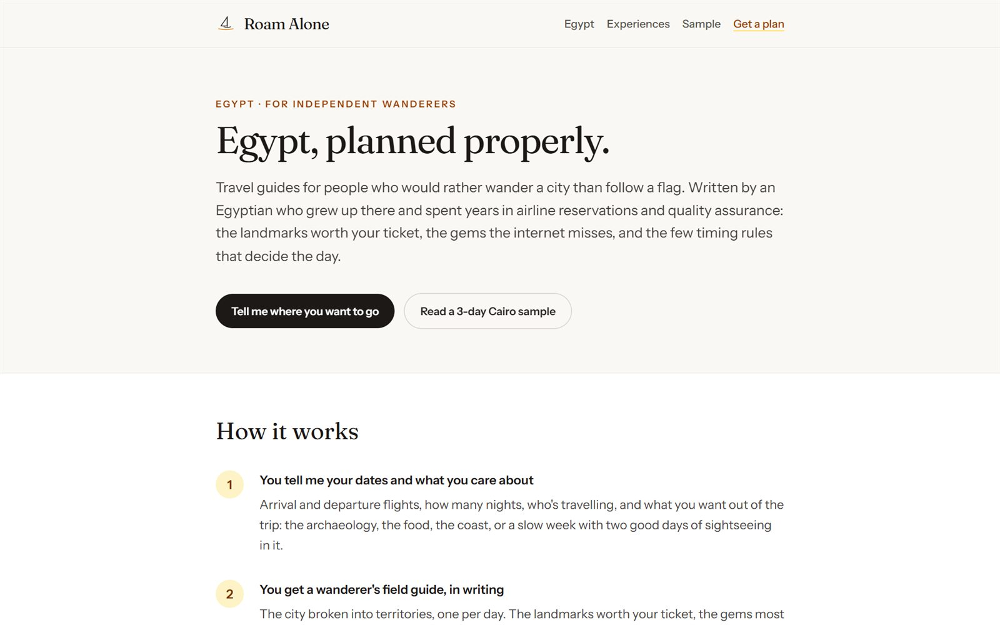
For small businesses whose customers read Arabic first.
Six bilingual sites, each with a right-to-left Arabic version and a full English one, switched with one toggle. They are demos: no real bookings are taken. I wrote the briefs and built them with Lovable.
React 19 · TanStack Start · Tailwind · Lovable

A café menu with prices, live search, opening hours and a feedback form.
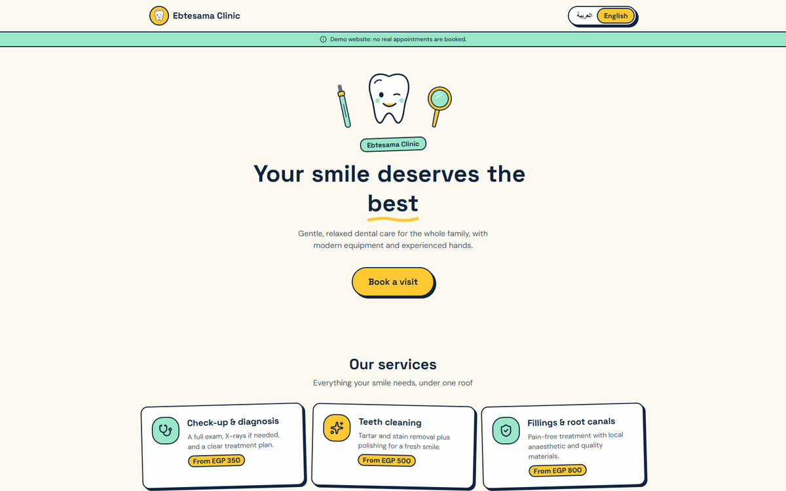
A dental clinic in Giza: services with starting prices and an appointment request form.
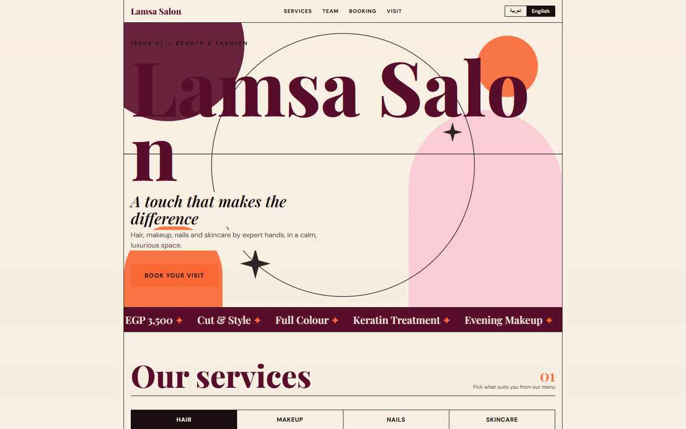
A women's salon laid out like a magazine: hair, makeup, nails and skincare, with a booking flow.
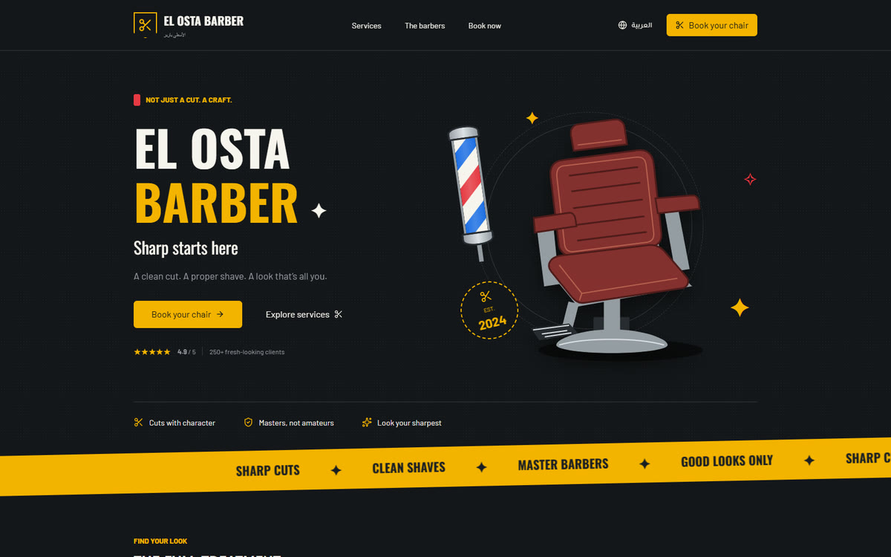
A barbershop with its barbers, a price list, a booking flow and a loyalty stamp card.
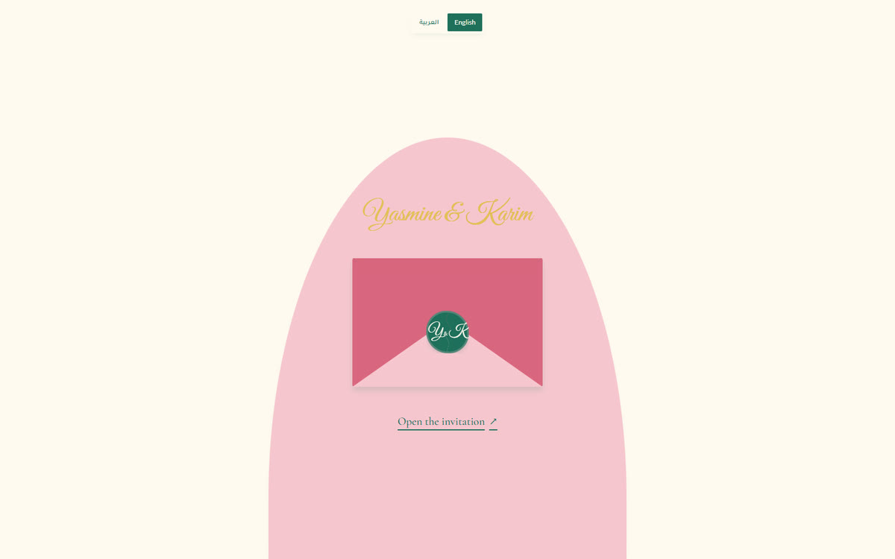
A wedding invitation that opens from an envelope, with a countdown and an RSVP form.
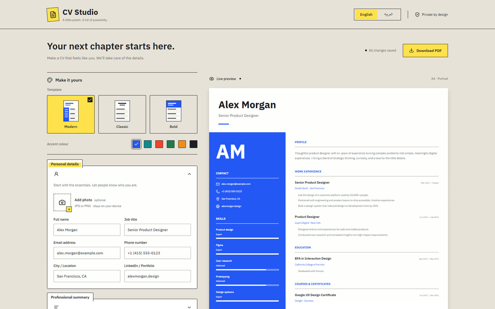
A CV builder in English or Arabic: three templates, six accent colours, saved on your device, exported to PDF.
Two smaller builds, each made to answer one question.
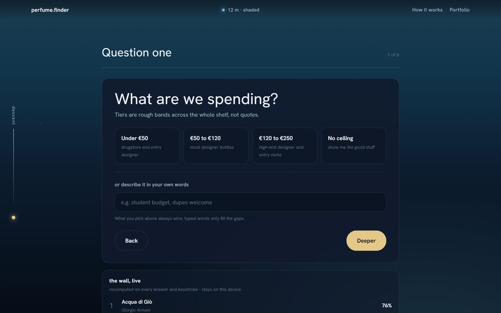
Which fragrance should I try? Answer six questions or describe what you want, and a ranking of 40 fragrances updates on every answer, scored on your device.
Vanilla JS · three.js · GitHub Pages
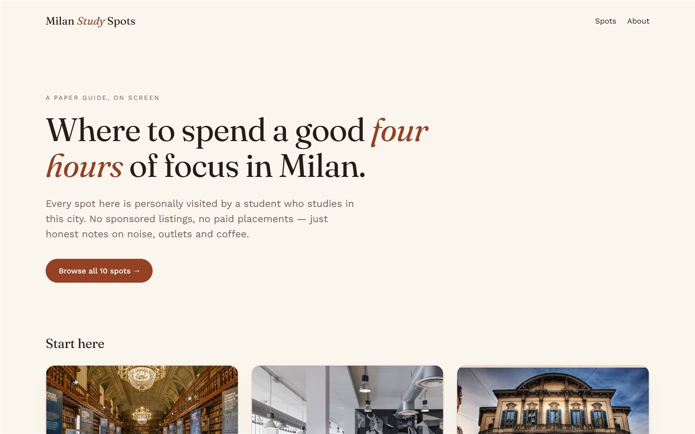
Where can I work for four hours in Milan? Ten libraries, cafés and study rooms, with filters and a page per spot. I chose the spots and built it with Lovable.
React · Vite · Tailwind · Lovable
Tools I use every day, published under MIT at github.com/ahmedmetered.
For finance teams who match Stripe payouts to bank statements by hand.
It reconciles Stripe payouts with Wise, Revolut and Mercury exports across currencies, recognises transfers between your own accounts, and sends every unclear case to a person with the reason written out.
For anyone who needs to understand an app without its source.
A bridge that lets the AI agent you already use drive the open-source rea CLI across binaries, Electron apps, .NET assemblies and websites.
For developers who want a code review they can trust.
It detects the stack, applies 33 review lenses, and checks every finding against the actual code before it reports it.
For anyone starting a project and wanting the plan before the code.
It writes the specification, implementation plan, task list and branding first, then a single-shot prompt to build from.
For developers joining a codebase they did not write.
It maps a codebase into layered Mermaid diagrams, each one citing the source files it came from, and updates them instead of regenerating.
For anyone whose CV has to look exactly like the design.
It rebuilds a CV in HTML, prints it to a pixel-close PDF, keeps an editable DOCX alongside, and checks the match with numbers instead of eyeballing.
2022-2026 · Cairo
Quality Assurance Analyst, airline account
Sutherland Global Services
Started as an airline reservations agent on Amadeus, moved into virtual QA, then promoted to QA Lead: multi-channel quality checks, root-cause analysis, and QA representation in the Cairo leadership team.
London · Egypt
Automation consulting, private clients
Sold, scoped, delivered, measured
Lead routing and database-reactivation campaigns for a private clinic in London on GoHighLevel and Zapier, plus n8n automations for a healthcare business in Egypt.
2026-2028 · in progress
MSc Mechanical Engineering, Automotive and Motorsport track
Politecnico di Milano
2021-2025
BSc Automotive Mechatronics
Helwan University, Cairo (renamed Capital University)
Thesis: fleet telemetry tracking over OBD-II and GPS, graded 91/110.
Training and certifications
Engineering Project Management, The British University in Egypt (2024)
Applied Data Science Specialization
Intro to Programming NanoDegree
Product and analytics
SQL · Excel and Google Sheets (advanced) · Python for data analysis and reconciliation · root-cause analysis
Operations and platforms
Stripe · SendGrid · Resend · n8n · Zapier · GoHighLevel · GitHub Actions CI · Linux (Caddy, pm2, Azure) · Docker · Salesforce
Engineering
Node.js · Next.js · React · TypeScript · PostgreSQL · SQLite · Playwright
Languages
English C1 · Italian A2, in daily use in Milan · Arabic native